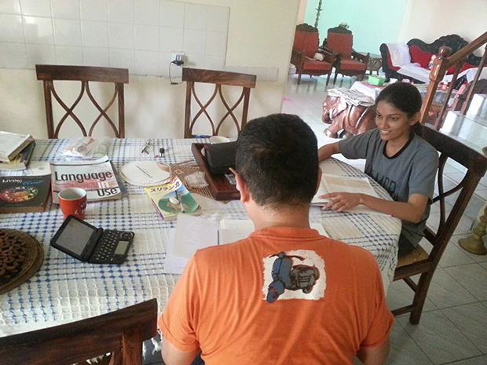

「長期で、しかも他の団体や組織よりリーズナブルな価格で英語が学べるという点で参加しました。
英語レッスンは、特に問題はありませんでした。
教師の方の一人が途中から就職したため、レッスン時間は勤務を終えた夜の7時半からにはなってしまいましたが、仕事の疲れがあるにも関わらず、責任をもって授業を続けていただけました。
感謝しております。
私の世代の学校英語教育は作文と読解が最優先。
ヒヤリングは重視されていませんでした。
そのせいか、会話や作文に比べ、ヒヤリングの授業に苦手意識があります。
強制的にでも英語の文を聴かせる時間を作ったほうがいいのではないでしょうか。
ホストファミリーとの生活は、マーネルを通じて地域の方と交流させて頂きました。
お寺での日本語の授業、孤児院や身寄りのない老人ホームの訪問などなど。
観光地ももちろん行きましたが、社会見学を経験できてとても良かったと思います。
持病がありましたので，万が一の時の医療体制について少し不安がありました。
何から何まで親切に対応していただけました。
低開発村視察は、何回も行けると思っていたのですが、一回きりというのが少し残念でした。
今回の滞在で、『戦争』について深く考えさせられました。
私の教師の方の友人で、繊維工場で働くタミル人の方は大きな音が鳴ると精神状態が不安定になるということでした。
子供の頃の内戦時の政府軍の空爆が脳裏に焼き付き、ＰＴＳＤ症状が大きな音がなる度に現れそうです。
内戦は確かに終わりましたが、癒されることのない心の傷を抱え続けている人が沢山いると思うと複雑な気持ちになりました。
その話を悲しそうに語られる教師の方（シンハラ人）を見て、改めて戦争だけはゴメンだと思いました。
実際の滞在の中では、身の危険を感じたことは一度もなく、ワラカポラという田舎町だったこともあるのでしょうか、治安が良かったです。
今年の4月に教師だった方が結婚されますので、セレモニーに出席させて頂く予定です。
英語をまた勉強したいと思った時は、またこのプログラムを利用させて頂きます。」